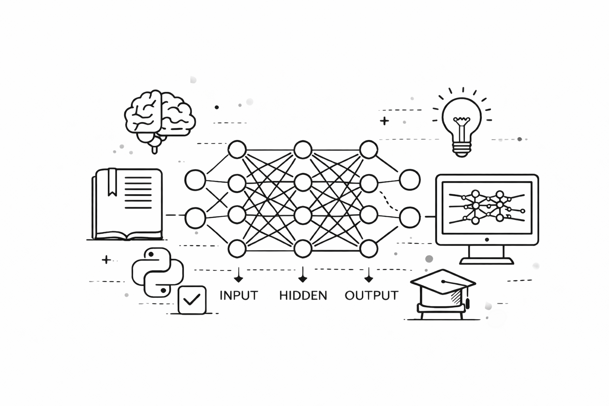
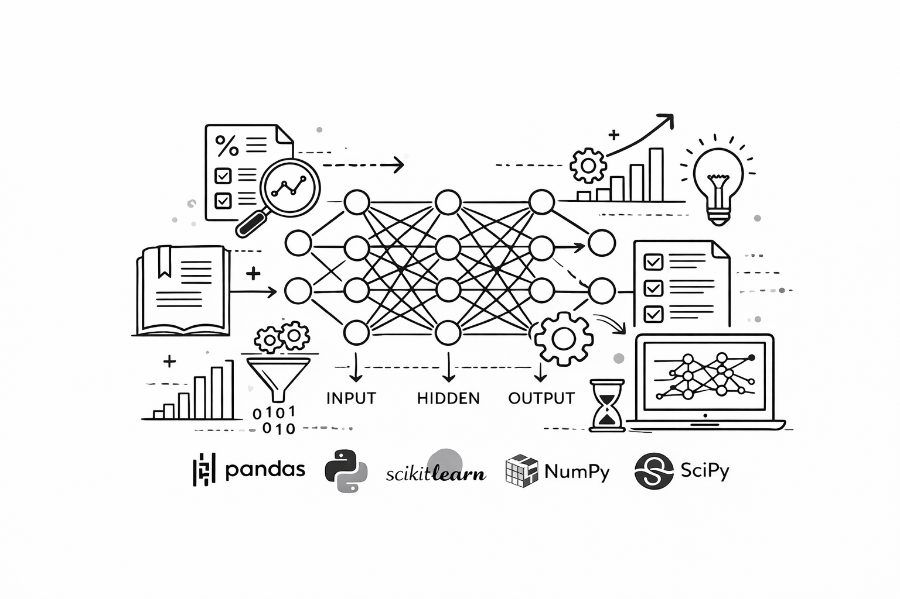
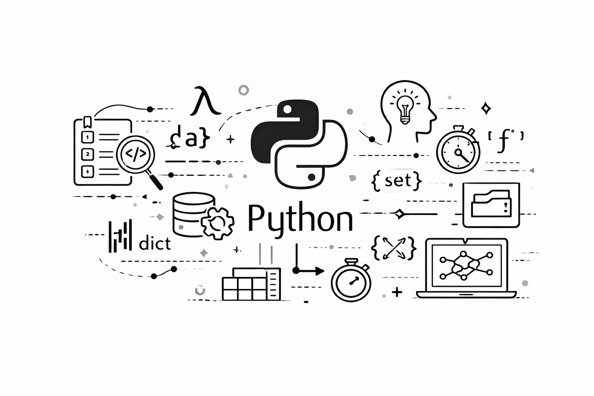

01
Network Intrusion Detection
Deep-learning detection of malicious network traffic using the CIC dataset and transformer-based methods.
- Deep Learning
- Transformers
- Cybersecurity
Computer science graduate working across AI, machine learning, data, and software engineering—with an eye for products people actually enjoy using.
↓01 / Selected work
01
Deep-learning detection of malicious network traffic using the CIC dataset and transformer-based methods.
02 / About
I care about the space between a promising idea and a dependable product.
I’m a Computer Science graduate from North Carolina A&T State University. My work combines analytical thinking with hands-on engineering—from preparing data and training models to shipping full-stack experiences.
My path across two countries and three institutions shaped how I work: adapt quickly, learn deeply, and make complicated things easier for others to understand.
Core direction
Education
B.S. Computer ScienceNorth Carolina A&T State University · 2025Current toolkit
03 / What I bring
From problem framing and preprocessing through evaluation, iteration, and deployment thinking.
Reliable pipelines, structured analysis, automation, and clear reporting that turns raw data into decisions.
Responsive front ends, practical back ends, and thoughtful interfaces built around the user’s real task.
Testing, documentation, debugging, and process discipline that make good systems dependable.
04 / Notes

Dive into the fundamentals behind modern AI.

Prepare better data for stronger models.

Simple techniques that improve everyday work.
05 / Contact